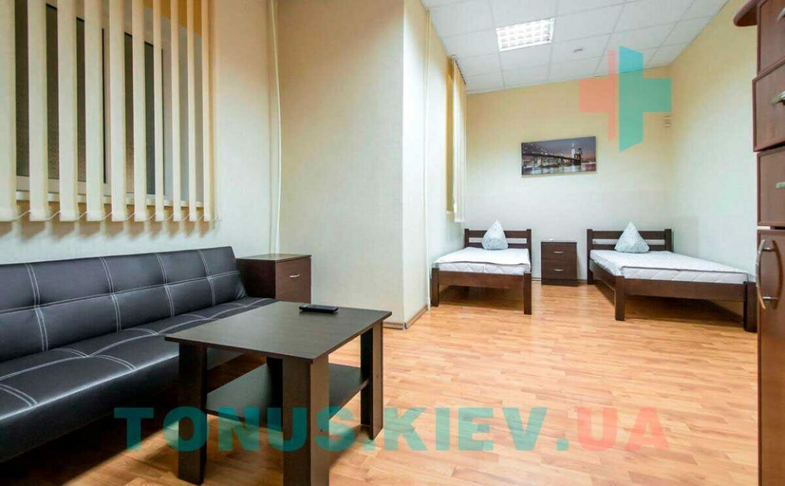

Здрастуйте, мене звуть Всеволод, мені 27 років. Хочу трохи поділитися історією про своє життя і розповісти трохи про цей центр і своє минуле.
Наркотики я почав приймати у 17 років, це була спочатку трава, потім амфетамін.
Мене пригостили мої друзі, моє життя почало трохи руйнуватися.
Я відразу підсів на цей наркотик і ні про яке одужання чи тверезість перші п’ять років не йшлося, з навчання мене вигнали, з гуртожитку я з’їхав і поїхав у своє рідне місто Біла Церква.

Тривалий час я вживав наркотики, жив пустим життям і так тривало кілька років, потім я поїхав до Польщі працювати і там познайомився з людьми і отримав доступ до наркотиків.
У Польщі я пробув, це мені було 23 роки пробув до 24 років, якщо спочатку я вживав раз на тиждень раз на місяць, то в Польщі я почав вживати частіше. Дуже багато наркотиків у моєму житті було. Навіть дозування 1 Грам амфетаміну, і це дуже сильно похитнуло мою психіку.
Коли я повернувся до України, це помітили мої батьки і я поїхав на свою першу реабілітацію, там я пробув 1 рік, вийшов від туди і зірвався після центру. Зі мною ніякого зв’язку не було, я відключився від цієї спільноти, в якій перебував рік і залишився один зі старими друзями, а нових у мене не було, це призвело до мене зриву.
Потім я зловживав якийсь час, почав вживати багато і часто, згадав що на минулому центрі спілкувався з людиною, яка підказала мені про програму «7 навичок», порекомендувала її, що це дуже хороший центр з хорошими фахівцями та умовами, програмою.
Коли знову я відчув, що сам не впораюся, що моє життя пішло під укіс, я знайшов цей центр в інтернеті і про це в принципі не шкодую, мені дуже сподобалося ставлення до мене персоналу дуже якісна програма одужання і хороші умови проживання плюс для мене було важливо, щоб можна було відпочити, перейти.

Я вибрав цей центр і зараз вже 7 місяців перебуваю тут, стосунки з батьками відновилися і в принципі готовий далі до тверезого життя, отримав усі навички, інструменти, знання та багато нових друзів, перебуваючи на цьому центрі. Якщо у Вас ще є знайомі, які вживають або Ви самі вживаєтесь, то звертайтеся в наркологічний центр “Тонус Плюс”. Тут Вам допоможуть або Вашим знайомим знайти комфортне, тверезе життя!